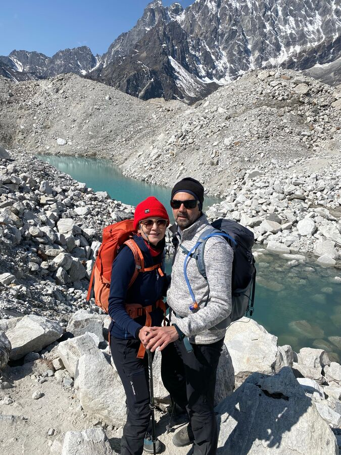
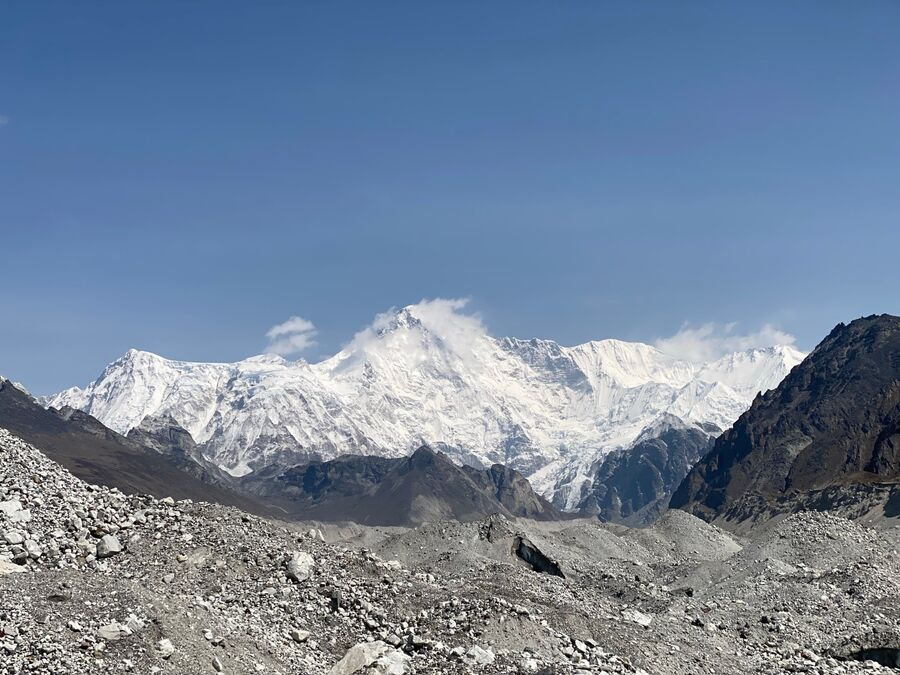
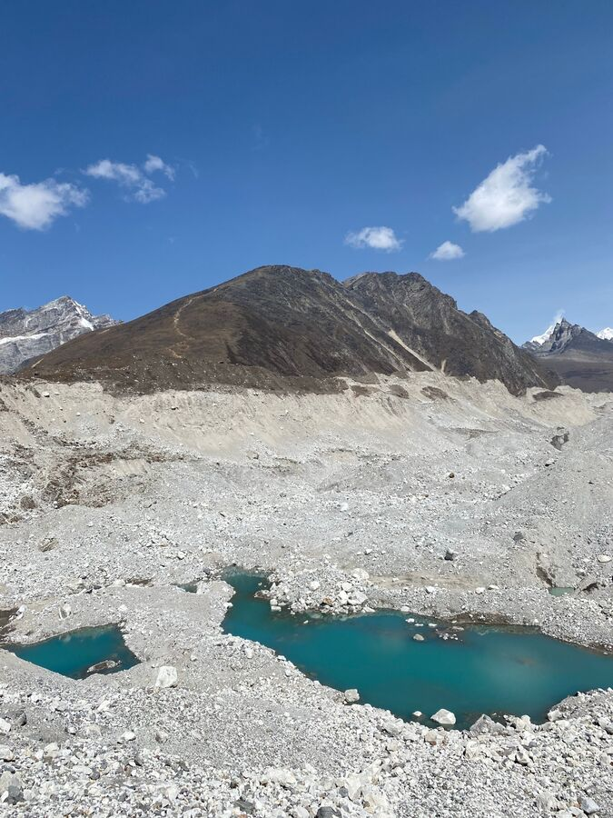
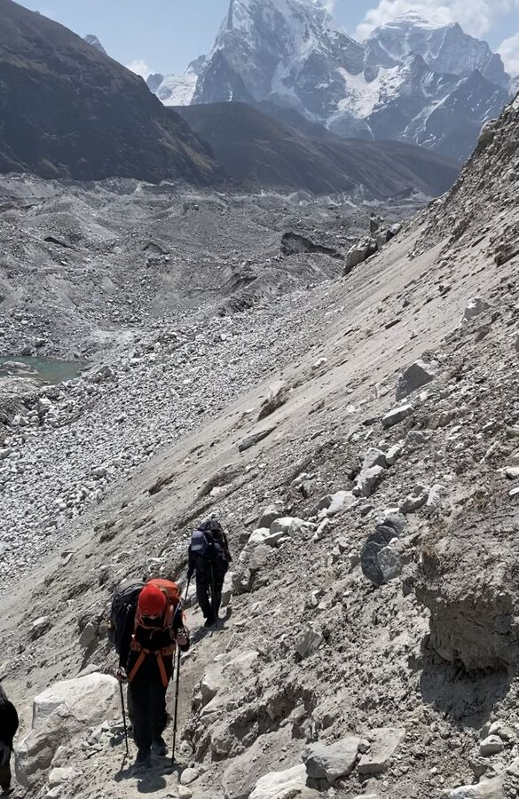
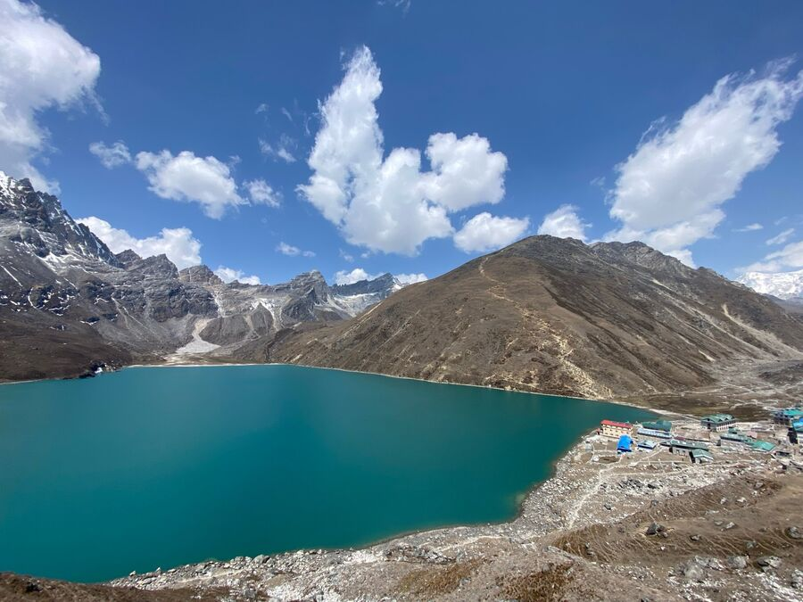
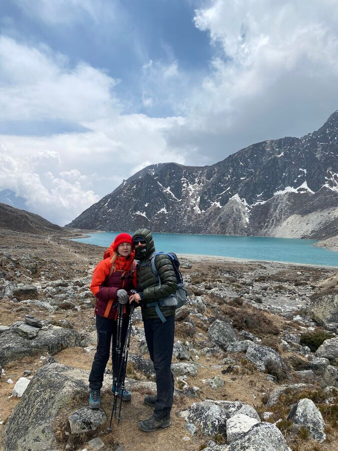
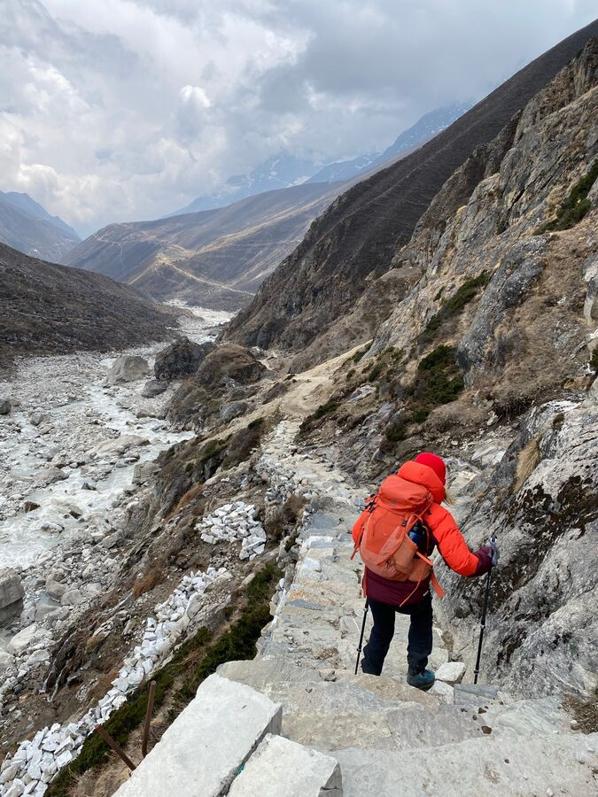
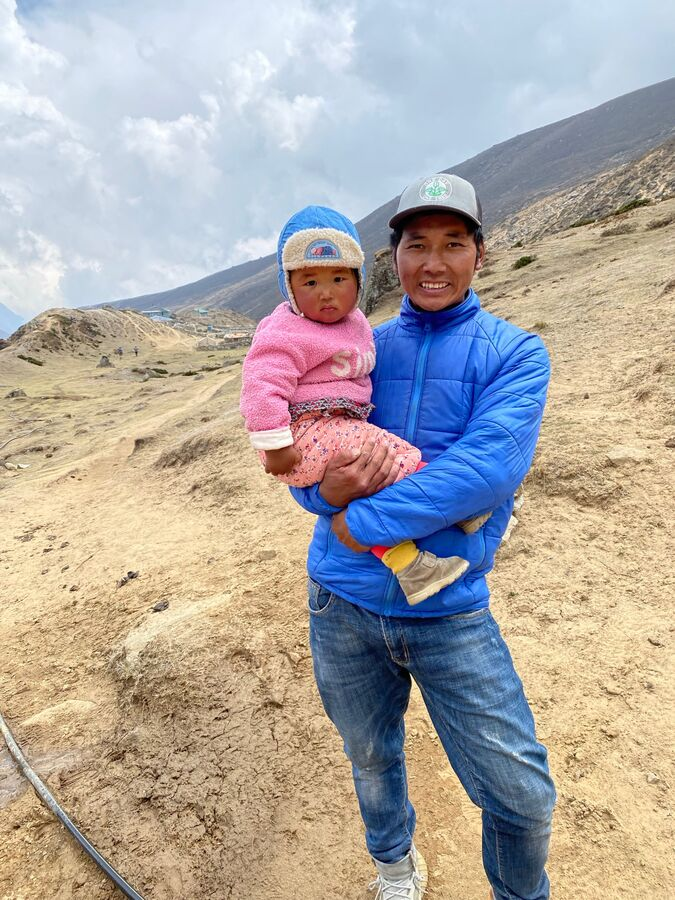
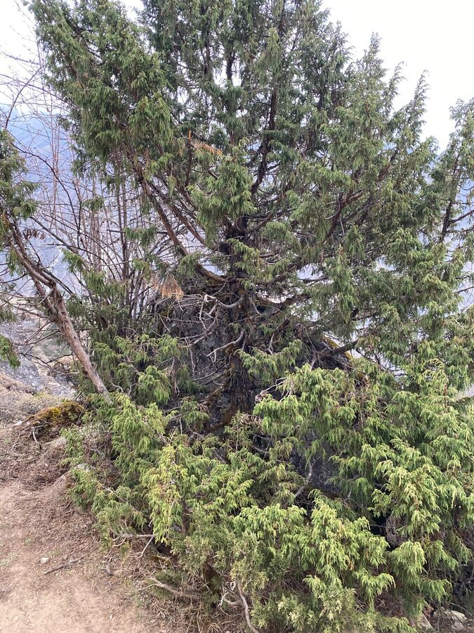
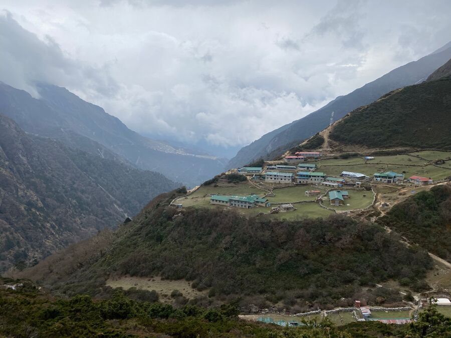

Um es vorwegnehmen: Die Nacht war nicht besser, eher schlimmer. Ich war seit 23 Uhr wach und versuchte, aufrecht im Bett sitzend die Zeit totzuschlagen. Da unsere Powerbanks schon leer waren, konnte ich auch nicht ewig lange mit dem Smartphone herumspielen. Ich kam irgendwann zu der Einsicht, dass es keinen Sinn machen würde, noch nach Gokyo zu wandern, wenn man ohnehin nicht den Gokyo Ri besteigen will. Denn das wäre nicht nur in Richtung Norden (und wir mussten eigentlich nach Süden), und wir mussten noch über den Gletscher. Unser Tagesziel für den darauffolgenden Tag war Dole, und nach Dole kommt man viel einfacher, wenn man von Dragnag direkt nach Süden wandert. Wir hätten dann sogar einen Tag gespart und hätten schneller an Höhe verloren.
Nun ja, nachdem wir uns fertig gemacht hatten und um 7:30 Uhr – heute wegen der ursprünglich kürzesten Etappe der Tour – beim Frühstück saßen, diskutierten wir meine Idee mit Naran. Wir entschieden uns dann, doch nach Gokyo zu wandern, dort aber nicht zu übernachten, sondern direkt bis Dole abzusteigen. Ein sehr ambitionierter Plan, der aber bis auf die Besteigung des Gokyo Ri an allen unseren Zielen festhielt. Sicherlich wären wir früher losgegangen, wenn wir unsere Planänderungen gewusst hätten.
So liefen wir also um 8 Uhr bei sonnigem Wetter los, um den größten Gletscher Nepals zu überqueren. Es ist der Ngozumpa-Gletscher. Er wird vom sechsthöchsten Berges der Welt Cho Oyu gespeist und ist 36 Kilometer lang.
Wer in Erdkunde aufgepasst hat, der weiß, dass so ein Gletscher seitlich Erd- und Gesteinshügel anhäuft, die Seitenmoränen. Wir waren ja schon auf dem Khumbu-Gletscher des Mount Everest darauf herumgekraxelt. Beim größten Gletscher Nepals ist die Seitenmoräne dann halt ein bisschen größer. Wer also auf den Gletscher will, muss erst einmal diese Monster-Moräne überwinden. Witzigerweise gab es einen offiziellen Weg dorthin. Mit Fahnenmast beim Eingang auf dem höchsten Punkt der Moräne. Bis dahin benötigten wir knapp 30 Minuten. Und dann blickten wir in das Ungetüm.
Blick vom oberen Rand der Seitenmoräne in den Gletscher. Naran steht am unteren Rand und am Gletscher selbst.
Ein Gletscher ist im Grunde ein riesiger Haufen Geröll. Dazwischen ist feinster Sand, aber auch riesige Felsbrocken. Das Eis hat den ganzen Müll in den letzten Jahrtausenden am Grund und den Seiten regelrecht abgehobelt. Die einzelnen Teile verschwinden im Eis, irgendwann erscheinen sie wieder an der Oberfläche. Alles total durchmischt. Und es gibt dort Berge und Täler und Seen, natürlich im Kleinformat. Wobei so klein das auch nicht ist.

Es gibt also einen offiziellen Weg durch den Gletscher. Und da so ein Gletscher ein lebendiges Wesen ist und der eine oder andere Streckenabschnitt auch mal im ewigen Eis verschwindet, wird er regelmäßig überarbeitet und markiert. Dies entweder durch farbige Markierungen oder das Aufstapeln mehrerer Steine am Wegesrand. Naran erzählte uns, dass schon Leute im Gletscher gestorben sind, weil sie sich nicht auskannten und zu spät unterwegs waren.

Wir benötigen knapp 2 Stunden, um den Ngozumba zu durchqueren. Immer schön auf und ab wie gewohnt. Teilweise konnte man das Eis sehen. Manchmal bildeten sich graue, manchmal türkisfarbene Seen.

An der westlichen Seitenmoräne angekommen, mussten wir diese nur noch erklimmen. Sie war 60-70 Meter hoch und sehr steil. Es war sandig ohne einen richtigen Weg. Das war das erste Mal, dass ich wirklich Angst hatte, uns könnte etwas passieren. Aber da hingen wir schon 30 Meter in der Wand und zurück ging nicht mehr. Man musste einfach Ruhe bewahren und weiter hoch.

Oben angelangt atmeten wir erst einmal durch. Dann ging es weiter nach Gokyo. Bis zum ersten Blick auf den berühmten Gokyo-Lake dauerte es nur noch 15 Minuten. Natürlich wieder Anstieg. Wir waren jetzt auch schon wieder auf 4.850 Höhenmetern.

und neben dem 3. Gokyo-See
Gokyo hat insgesamt 5 Gokyo-Seen. Derjenige beim Ort ist die Nummer 3. Wir wanderten herunter zu unserem eigentlich gebuchten Hotel direkt am See. Wirklich wunderschön. Wir aßen dort dann unser Mittagessen.
Dann sollte es aber zügig weitergehen. Denn wir wollten nicht nur – wie ganz ursprünglich geplant – nach Machermo gehen, sondern das doppelt so weit entfernte Dole erreichen. Da es fast nur abwärts gehen sollte, war das auch machbar. Trotzdem waren das immer noch fast 12 Kilometer auf sehr schwierigen Gelände und ziemlich kaltem Gegenwind.
Zunächst wanderten wir am Gokyo See Richtung Süden entlang. Etwas später folgte der zweite, etwas kleinere Gokyo-See. Und danach der dritte, noch kleinere.

Die Strecke war bis dahin eher horizontal verlaufen. Dann ging es doch deutlicher bergab und richtige Schluchten taten sich auf.

Dann liefen wir plötzlich auf einer Hochebene, wahrscheinlich auf 4.300m. Dort siedelte eine junge Familie mit Kind und einigen Naks (weibliche Yaks). Mitten im Nirgendwo. Und wenn man auf die andere Seite der Schlucht schaute, erkannte man auch dort immer wieder Flecken, die von Menschen bewohnt werden. Sozusagen mitten im Berg. Verbunden nur durch einen Trampelpfad, den die Yaks da mal hineingestampft haben. Wir Menschen sind anscheinend vergleichbar einer Pflanze, die, wenn ihr Samen auf fruchtbaren Boden fällt, dort gedeiht.

Auf 4.227 Höhenmetern kamen wir dann das erste Mal seit langer Zeit wieder an einem Baum vorbei. Von da an änderte sich die Vegetation wieder rasch.

Schließlich erreichten wir Dole. Der Ort liegt – wie viele andere auch – auf einer Art grünem Hochebenen-Vorsprung wie auf einem Präsentierteller. Wir mussten allerdings noch recht viel bis in die Talsohle des Gebietes hinabsteigen. Dort lag unser Hotel, das Yeti-In. Da war es dann 16 Uhr. Wir hatten 8 Stunden benötigt. Eine extrem gute Leistung für unsere körperliche Verfassung

Das Hotel ist wirklich sehr nett. Der Gastraum ist völlig anders strukturiert und hat lange Tischreihen und Sitzbänke mit dicken weißen Kissen. Unser Zimmer hat ein Doppelbett und ein Bad. Der Klodeckel hat einen flauschigen Stoffbezug. Jedem, der jetzt die Mundwinkel verzieht, sei gesagt: Für solche Orte sind diese Bezüge gemacht. Ich schwöre.
Wir hatten auf der Strecke eine Kanadierin kennen gelernt. Sie ist auch in unserem Hotel untergebracht. Wir tranken zusammen Tee und unterhielten uns etwas. Ich legte mich dann hin, weil ich total müde war. Yeşim blieb im Gastraum, der beheizt werden sollte.
Zum Abendessen kam ich dann wieder in den Gastraum. An diesem Abend tranken wir auch den nepalesischen Rum wieder. Er hat mich gut von innen aufgewärmt.
Morgen geht es dann weiter abwärts nach Namche Bazar. Hoffentlich können wir heute schon besser schlafen, hier auf nur noch 4.000m. Gute Nacht.